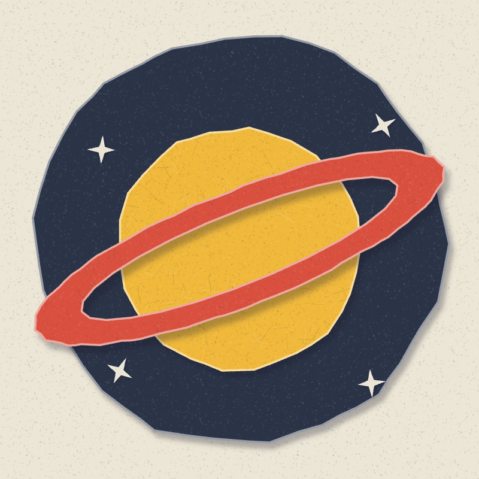

Español
Ciencia que da curiosidad.

Ciencia que da curiosidad
Videos de un minuto, hechos con papel recortado, que explican una sola idea de ciencia. Cada cifra lleva su fuente al final.
Ciencia que da curiosidad.
Science that sparks curiosity.
Ciência que dá curiosidade.
La science qui rend curieux.
La animación se dibuja con un programa propio que imita papel recortado. La narración es la voz de la autora, reproducida con un modelo de voz. Las fuentes de cada video aparecen al final del video y en su descripción.
Escríbenos y lo corregimos: dejamos la corrección en un comentario fijado y en la descripción del video.